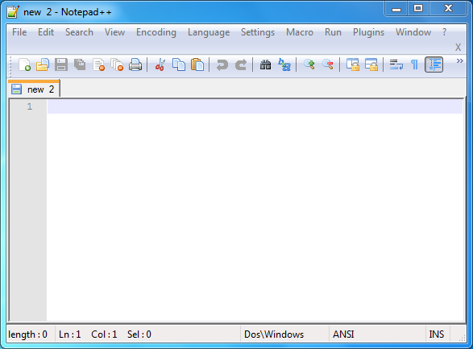
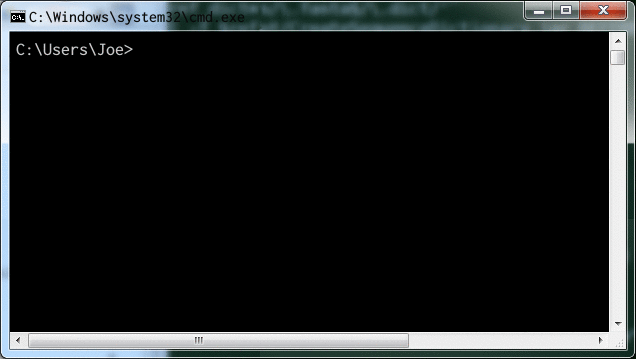
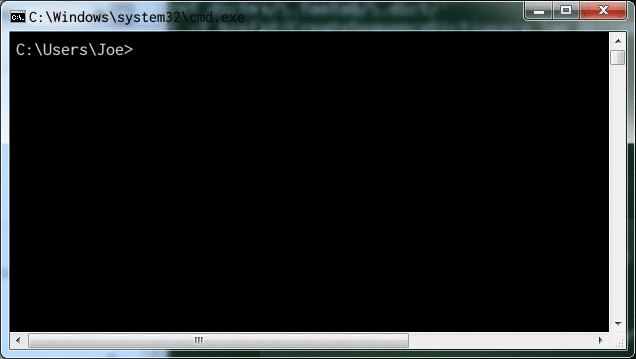
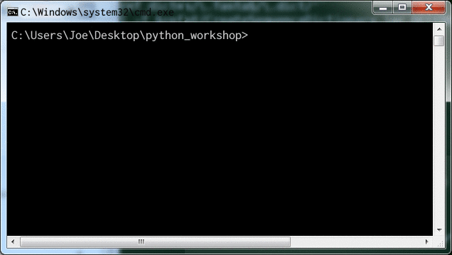

Writing your first Script
Organization of scripts
Before we write anything, let’s create a folder to hold your Python scripts.
Usually you would choose a hierarchy that’s sensible for you
(for example I use Documents/programming/python in my home directory
as the root for all of my Python projects!).
For the purposes of this workshop, let’s use your Desktop folder in your U drive and create a folder called
python_workshop
What is a Python Script?
A Python script is just a plain text file, and the
convention is to use the extension .py (instead of e.g. .txt)
to let programs know that it holds Python code.
Python code is very close to something called pseudo-code, which is what people use when detailing the main components of an algorithm.
For example, the pseudo-code for the factorial function (e.g. 3! = 3 x 2 x 1):
SET fact to n WHILE n is more than 1 SET fact to fact times (n - 1) SET n to n - 1while the python code is
fact = n while n > 1: fact = fact * (n-1) n = n - 1What this simple example illustrates, is that Python is extremely readable; it just takes becoming familiar with a few base syntax rules (~grammar).
We’ll be speaking Python in no time!
Worked Exercise : Hello, world!
We’ll start by creating a blank Python script file.
Creating a file
We’re going to name our first script file
exercise_hello_world.py and keep it inside the newly created python_workshop
folder.
To do this, open Notepad++. You should see a blank file (that may be named “new 1”, or “new 2” etc, depending on if you closed any tabs!).

If you don’t see a blank file, select File->New in from the menu bar.
Then select File->Save As, navigate to the python_workshop
folder we created a few minutes ago,
and set the file name to exercise_hello_world.py and click Save.
Now that we have a blank Python script file, lets start adding some code!
Initial content
First of all, enter:
# Author: Your Name <your@email.address>
# This is a script to test that Python is working
replacing the text in the line starting # Author with your details.
Running the script with Python: The Terminal
Now let’s see what running this through Python does!
Start a customized command prompt (reminder: in the Windows File Explorer, find the WinPython3 folder on the C: drive, and click on WinPython Command Prompt.exe).
A terminal window should pop up, that looks a little bit like

Reminder: Basic terminal usage
You were advised to have basic knowledge of using a terminal (Windows Command Prompt/Linux Terminal/MacOS Terminal), you’re about to see why!
Here’s a recap of the things you’re most likely to need.
Windows MacOS / Linux What it does cd FOLDER_NAMEcd FOLDER_NAMEChange directory to FOLDER_NAME dir [FOLDER_NAME]ls [FOLDER_NAME]List folder contents; if FOLDER_NAME
is omitted, list current folder contents....Reference to parent folder. E.g. cd ..
is how you would navigate from/a/b/c/to/a/b/
(if you are currently in/a/b/c/).mkdir FOLDER_NAMEmkdir FOLDER_NAMECreate a folder called FOLDER_NAME
Quick note on terminology
Folder and directory refer to the same thing, while full path or absolute path means the full directory location. E.g. if you’re currently in your Desktop folder, the folder is Desktop, but the full path is something like
/users/joe/Desktop. If you’re on Windows the path starts with a drive letter too, likeC:orU:, and the forward-slashes will be backslashes instead.Console and terminal (and sometimes shell) are usually used interchangeably to mean the same thing; the text-based interface where commands can be entered. In windows, the built-in console is also called the “command prompt” and is started using
cmd.exe.For our purposes, we’re going to be mainly interested in the terminal console which is where we type commands like
cd, ordir.For interactive Python snippet testing we can also use the Interactive Python console, which is where we can directly type python commands. You might encounter this later; for now just be aware that there are these two types of console.
Now using the terminal command to change directory, cd, navigate to
your Desktop directory.

You can verify that it contains your new python_workshop folder by
using the windows terminal command dir:
dir
should list
python_workshop
in the output.
Change directory into the python_workshop folder using
cd python_workshop
and verify that our new file is there using dir.
If you see your file (exercise_hello_world.py) listed, great! If not, check the previous steps carefully and/or ask a demonstrator for help.
Once the terminal is in the correct directory, we’re ready to run Python on our file.
As the terminal is preconfigured (meaning that it knows all about the Python program and where to find it) we can simply type python ... to run the Python interpreter, replacing “…” with input arguments.
In most simple use cases, we just use a single input argument; the script file name.
In advanced usage cases, we can also add in additional command line arguments to the script, but this will be covered in an advanced exercise in the follow-on workshop.
We can now type
python exercise_hello_world.py
to get Python to run our script file:

We should get no output - python has interpreted and run our script file, but as the script only contained comments, no terminal output was produced!
Comments
Comments are used to make notes about things like what each few lines of code are doing. In our case, we also added an initial comment that keeps track of who wrote the script. Comments are created by using the hash symbol, #.
A comment can take up a whole line as in our script above, or only part of a line; we’ll see an example of this later.
Adding functionality
Now that we have a script file that contains a couple of lines of comment, and successfully runs with Python (i.e. does nothing!), let’s add some functionality.
Switch back to the editor window (Notepad++) and add an empty line (for readability). Then, on the fourth line of the script add the text
print("Hello world from YOURNAME")
replacing the placeholder YOURNAME with your actual name.
Switch to the terminal window, and repeat the python command
Tip
On many terminals, you can press the Up arrow key to cycle through previous commands. This will save you from having to type the command each time!
Tip
On several desktop environments (including Windows), you can cycle between open windows using “Alt + Tab” (or “Alt + Shift + Tab) to cycle in the other direction); this saves you from having to use the mouse between editing and running code.
Hurrah! We got Python to output text to the terminal. This may not seem like much of an achievement, but once you understand this line of code, you’re well on your way to being able to program in Python.
So let’s have a look.
Anatomy of our script
Lines 1 & 2
As mentioned above, lines 1 and 2 are comments, which are non-executing lines of text that are used for us to be able to understand our code. They may seem pointless now, but if you give your script to a colleague who’s never touched a program before, if they read the first couple of lines they will immediately know who wrote the script, and why.
Comments become much more useful as scripts grow; future you may well benefit from well commented code as you look back over a script and try to remember what you were doing and why!
Line 4
Our first line of Python code contains two of the major concepts of this course; a function call, and data type.
Calling a function
The function being called, or executed, is named print, and
the data it is given as an argument is "Hello, world from Joe".
This data is of type string (more on ths in the next setion!).
What is a Function?
A function is a self-contained piece of processing; often functions take inputs and provide return values (but they don’t have to).
They provide a way to separate specific pieces of processing so that they can be reused over and over again.
If you’re familiar with the concept of a function from mathematics, programming functions can be similar: for example the sin trigonometric function generates an output number (between -1 and 1) for any input angle.
The
The syntax for calling a function is:
- the function name, in this case
print, - followed by open parentheses, (
- the argument list, in this case the string
"Hello, world from Joe", - and then close parentheses, )
Outputting to the terminal using print
The print function is useful for providing output to the terminal - which is
the most basic way of getting information out of a Python script.
The print function accepts a variety of input data types. For example we can write
print("Any string")
as well as
print(3.147)
i.e. a number.
You may also pass multiple, comma-separated arguments to the print function.
E.g.
print(10, "is bigger than", 2)
outputs:
10 is bigger than 2
Now that we know how to write a script, and how to run it with Python, let’s examine in more detail what goes into the script, starting with data types.
VITAL note on whitespace in Python scripts
The creator of Python decided that code-readability is crucial for good programming, and that unlike almost all other languages where badly laid out code is still valid, in Python code must be laid out in a specific way.
By layout, we’re refering to the whitespace (spaces or tabs) preceding text in code, known as the indentation:
For example
print("Hello")
print("World")
is perfectly fine, while
print("Hello")
print("World")
would cause an indentation error.
While this feature of Python may seem petty or just irritating at first, many Python users grow to appreciate its significance in enforcing good coding practice.
Previous Page